Chapter 4
Material advantage
4.1 Steinitz and Romantic chess
In Steinitz’s day, material played an important role. Or rather: sacrificing material was predominant. Gambits were very popular, and they often led to early attacks against the enemy king. To attack was the motto – if necessary, at all costs.
This period is rightly called The Romantic Age, for many combinational games of those days were extremely pretty. Material was quite lavishly thrown about, and there was a kind of ‘Romantic code’ that caused this way of playing to be successful: it was considered unsportsmanlike to refuse a sacrifice.
After the rationalism of Philidor, the first, unofficial World Champion, who had also managed to formulate a number of laws for the game, the Romantic Age had been a welcome change. From these times stem the following famous games, which, indeed, demonstrate that the advantage of extra material can sometimes be quite relative. I give these games without much comment. The mates at the end of both games are exceptionally beautiful.
IG 5.8 (C52)
GAME 1
1.e4 e5 2.♘f3 ♘c6 3.♗c4 ♗c5 4.b4 ♗xb4 5.c3 ♗a5 6.d4 exd4 7.0-0 d3 8.♕b3 ♕f6 9.e5 ♕g6 10.♖e1 ♘ge7 11.♗a3 b5 12.♕xb5 ♖b8 13.♕a4 ♗b6 14.♘bd2 ♗b7 15.♘e4 ♕f5 16.♗xd3 ♕h5
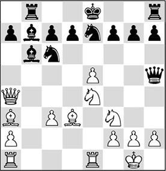
The assault on the black king is in full swing.
17.♘f6+
The start of an astonishing combination. 17.♘g3 was an excellent alternative here.
17…gxf6 18.exf6 ♖g8!
Black shows that White is not the only one playing!
19.♖ad1!
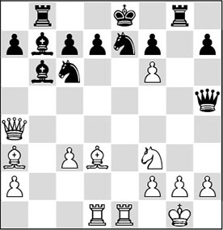
19…♕xf3?
At first sight Black appears to come out on top, since the white king also finds itself in great danger. After many analyses, 19…♖g4 turned out to be the correct continuation for Black. But thanks to his mistake, White is allowed to bring his stunning combination into the limelight.
If Black tries to justify his set-up by 19…♖xg2+!? 20.♔xg2 ♘e5, White has the same trick as in the game: 21.♕xd7+ ♔xd7, after which 22.♗g6+ ♔e6 23.♗xh5 gains material for him.
20.♖xe7+! ♘xe7!?
Fortunately Black cooperates, but also after the slightly better 20…♔d8 Black would have lost, see: 21.♖xd7+! ♔c8 (21…♔xd7 22.♗f5+ ♔e8 23.♗d7+ ♔d8 24.♗xc6+ and mate) 22.♖d8+! ♔xd8 (22…♖xd8 23.gxf3; or 22…♘xd8 23.♕d7+!! – the same motif as in the game) 23.♗e2+ (less clear is 23.♗f5+) 23…♘d4 24.♗xf3 ♗xf3 25.g3 ♗xd1 26.♕xd1, with a winning endgame.
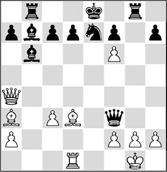
21.♕xd7+!! ♔xd7 22.♗f5+ ♔e8 23.♗d7+ ♔f8 24.♗xe7
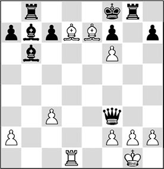
Rounding off with an exquisite mate.
1-0
SI 39.7 (B44)
GAME 2
1.e4 c5 2.♘f3 ♘c6 3.d4 cxd4 4.♘xd4 e6 5.♘b5 d6 6.♗f4 e5 7.♗e3 f5?
After 7…♘f6 8.♗g5 a6, according to present-day theoretical opinion, Black has nothing to complain about.
8.♘1c3!
Morphy was famous for his logical play. Piece development before all.
8…f4
After 8…a6 9.♘d5! axb5 10.♗b6, White is already winning.
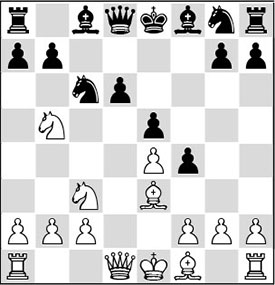
9.♘d5!
A pretty piece sacrifice, with which Morphy demonstrates that sometimes material is less important than piece activity.
9…fxe3 10.♘bc7+ ♔f7 11.♕f3+?
Stronger was 11.♘xa8, but Morphy prefers to go after the enemy king!
11…♘f6 12.♗c4
With each move a new piece joins the attack.
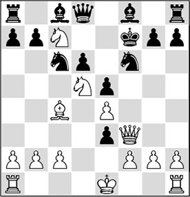
12…♘d4!
Black is putting up a good show as well.
13.♘xf6+ d5!
Anderssen continues to fight back.
14.♗xd5+ ♔g6?
Today’s computer programs allow us to discover that Black could have posed his opponent much greater problems with 14…♔e7!, although White keeps the upper hand with 15.♕h5 gxf6 16.♕f7+ ♔d6 17.♘xa8.
15.♕h5+ ♔xf6
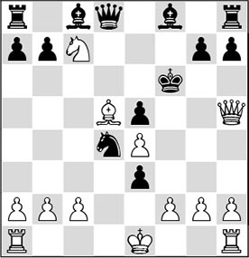
16.fxe3!
This way White opens the f-file, after which a new piece can be involved in the attack.
16…♘xc2+
This loses, but also after 16…♕xc7 17.0-0+ ♔e7 18.♖f7+ Black would have had nothing left to play for.
17.♔e2
And Black surrendered.
Wilhelm Steinitz was in fact the first to take a critical stance against this ‘Romantic School’ and to put question marks to all these sacrificial feasts. He seriously doubted their correctness, and not without justification.
Steinitz tried to demonstrate that, if the combinations turned out to be incorrect, he could not appreciate their appeal, even if the game was won in brilliant fashion. As the first official World Champion, Steinitz made a habit of accepting the first (and sometimes also the second) sacrifice, but refusing the gifts that followed after that, in order to show that he couldn’t be outfoxed that easily.
In fact, Steinitz was the first to approach the game scientifically. By playing through games of the masters of the day, he discovered certain methodologies, and he attempted to apply those in his own games. Furthermore, he was one of the first who succeeded in defending successfully against the attacking zeal of the Romantic School.
A historically important moment occurred in 1866, when in a match Steinitz beat Anderssen 8-6. Adolf Anderssen was universally considered to be the best player in the world, and he was a warhorse if ever there was one, but he turned out to have no answer to his great opponent’s tough defence. The decisive factor in their confrontations was that Steinitz had the ability to ‘sit still’ in difficult situations where he had extra material (sometimes not more than an extra pawn), but was suffering an attack. If we relate Steinitz’s games to today’s strategic conceptions, we may consider that he overdid the ‘pawn-grabbing’ a little. Nevertheless, we can claim that one of the cornerstones of his theory remains upright: if the attacker has invested material, there is the restriction that simplifications are generally to the advantage of the defender. The following game illustrates this adage well.
KG 5.5 (C25)
GAME 3
1.e4 e5 2.♘c3 ♗c5 3.f4 d6 4.♘f3 ♘f6 5.fxe5 dxe5 6.♘xe5
Nimzowitsch later advanced the proposition that any central pawn that could be captured unpunished, should be taken immediately. What Steinitz does here is too dangerous according to modern opinion.
6…♕d4 7.♘d3 ♗b6 8.♕f3 ♘c6 9.♗e2 ♗g4 10.♕f4 ♗xe2 11.♔xe2
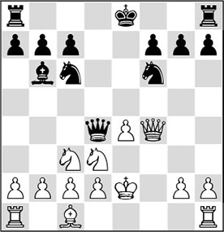
Now the white king is terribly exposed; Black has more than sufficient compensation for the pawn. However, this game illustrates Steinitz’s provocative style.
11…0-0-0 12.♘e1 ♘b4?!
Black wants to render 13.d3 impossible (in view of 13…♘xc2), but it would have been better to play 12…♖he8 first, and only after 13.d3 to continue with 13…♘b4.
13.a3 ♖he8?!
This looks promising, but the white position turns out to be ‘fireproof’.
14.axb4 ♘xe4 15.♕f5+ ♔b8 16.♘xe4 ♖xe4+
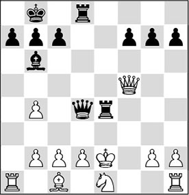
17.♔d1
Typically Steinitz. He is not at all concerned that his pieces are on the bottom rank; for him the feeling dominates that a material advantage is more important. In this game he is proved right.
17…♖f4 18.♕h3 ♖e8
18…♕xb4? would fail to 19.♘d3.
19.c3
Like an escape artist, White wriggles out of the straitjacket, after which he will try to convert his material advantage.
19…♕c4 20.♔c2 ♖f2 21.♘d3 ♖fe2
21…♕e4 22.♖e1.
22.b3 ♕c6
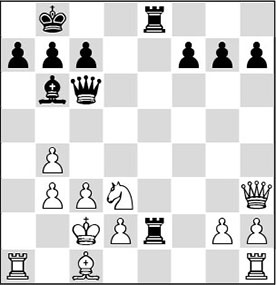
23.♕f3
A typical manoeuvre in a position like this. The player who has more material offers an exchange of pieces, and since the attacker cannot accept this, the defender can improve the position of his pieces, and slowly take the sting out of the opponent’s attack.
23…♕g6 24.♖f1 ♖8e3 25.♕f5 ♕c6 26.b5 ♕d6 27.♘f4 ♖e5 28.♕xf7 ♖2e4 29.d3
Finally White finds time for this move, after which Black’s resistance is definitively broken.
29…♖e2+ 30.♘xe2 ♖xe2+ 31.♗d2
1-0
Thus, the ‘Art of Defence’ was elevated to the level of a kind of weapon in the arsenal of World Champions. In quite precarious situations, the world’s elite players prove to be able to keep a clear head. They gratefully accept a material advantage and then conduct their defence. Strong players often tend to ‘grab a pawn’ and then ‘sit on it’. Lasker was also famous for this.
RL 7.6 (C67)
GAME 4
1.e4 e5 2.♘f3 ♘c6 3.♗b5 ♘f6 4.0-0 ♘xe4 5.d4 ♗e7 6.♕e2 ♘d6 7.♗xc6 bxc6 8.dxe5 ♘b7 9.♘d4 0-0 10.♘c3 ♗c5 11.♘f5 d5 12.♕g4 ♗xf5 13.♕xf5 ♖e8 14.♗f4 ♗d4 15.♖fe1 ♘c5 16.♖ad1
16.♘d1 is not exactly an improvement in view of 16…♘e4, and Black is clearly better.
16…♗xc3 17.bxc3
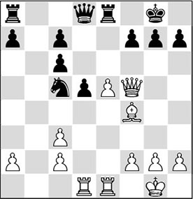
17…♕c8
Now that he has saddled White with a doubled pawn, Black is prepared to exchange queens. If White avoids this, Black will attack his weak queenside pawns.
18.♕h5 ♕a6 19.♖e3
Logically, White opts for an attack. If 19.♗e3 ♘e4 20.♗d4 c5 21.f3, with counterplay.
19…♕xa2
It was known that Lasker was not above grabbing a pawn, in the belief that he would be able to reduce the opponent’s play on the other side of the board to zero.
20.♖c1 ♕c4
20…♖e6 also came into consideration.
21.♖f3 ♘e6 22.♗d2 ♖e7 23.♖h3 ♕e4 24.f3 ♕g6 25.♕h4 ♖d7 26.f4 ♕e4 27.g4
27.♖d3.
27…♘f8 28.♕f2 a5
If you have an extra pawn, you should make its presence felt!
29.♖e3 ♕c4 30.f5
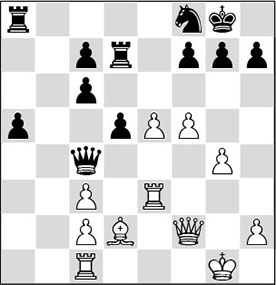
30…a4!
This pawn has to do all the work. Lasker shows no fear for the hostilities in the face of his king and does not fall for the temptation of taking the g4-pawn, since that would give White another attacking file. If 30…♕xg4+? 31.♖g3 ♕c4 32.♗h6, White obtains attacking chances, for example: 32…g6 33.♖f1.
31.♖f1
This is already the writing on the wall, but White did no longer have a good continuation available. 31.e6? was no good either in view of 31…fxe6 32.fxe6 (or 32.f6 gxf6 33.♕xf6 ♖f7, and White’s attack peters out) 32…♘xe6 33.♖xe6 ♕xg4+-+; 31.h3 is too slow after 31…a3 32.e6 fxe6 33.fxe6 ♖e7 34.♕f5 a2 35.♖f1 a1♕, and Black wins.
31…a3 32.♖ee1 a2 33.h3 c5 34.♔h2 d4 35.♕f3 c6 36.e6
36.♕xc6 dxc3!, and Black wins.
36…fxe6 37.fxe6 ♘xe6 38.♕xc6 ♖da7 39.♖a1

39…♖f8
It is clear that the initiative has passed on to the black player.
40.♖fe1 ♘d8 41.♕b6 ♖af7 42.♗g5 ♖f2+ 43.♔g3 ♕xc3+
And White resigned, as after 44.♔h4 ♕xh3+! he will be elegantly mated: 45.♔xh3 ♖8f3+ 46.♔h4 ♖h2#.

Emanuel Lasker
4.2 Technique
Sometimes, while playing through a game between grandmasters, we read the sentence ‘and the rest is a matter of technique’ at the end of the analysis. The author assumes that it is clear to everyone that the player in question will know how to convert his advantage into a win. How he does this is apparently not considered to be interesting, since at this point the commentary usually stops. The author tacitly takes for granted that a good player knows how to cash in on his advantage.
However, in practice this stage of the game turns out to be not as self-evident as it seems. To force the win requires an entirely different frame of mind than a player may be used to. The famous Russian trainer Alexander Kotov speaks of ‘schematic thinking’, meaning that the player should not think in ‘moves and variations’ but rather in ‘schemes and plans’. This is best explained with the help of the following example.
GAME 5
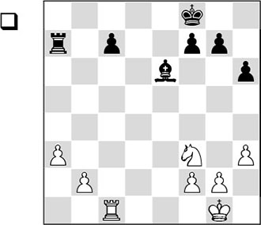
White has an extra pawn, but it seems that the win is still a long way off. However, winning from a position like this was right up Capablanca’s street. The Cuban is generally seen as an endgame specialist par excellence. His games look quite simple when you play through them, but, of course, in practice this is not the case. What does catch the eye is the great clarity with which Capablanca managed to get his pieces on the right squares. The secret lies mainly in his ‘schematic way of thinking’.
So, in order to play the endgame better, we should not think in ‘moves’, but rather in schemes. Capablanca especially applied this technique to the treatment of endgames. The following anecdote is characteristic in this respect.
During a grandmaster tournament an interesting endgame had arisen. A number of spectators were busy unveiling the mysteries of the position on an analysis board. But no-one was able to come up with the correct path to the win, even though it appeared to be close at hand. Then Capablanca entered the room and looked at the scene. After five minutes he intervened. Instead of indicating a variation, he took the pieces off the board and then put them back on several ‘ideal squares’. ‘This position is an easy win’, he said. ‘You just have to find out how to play the pieces to these squares.’ Then he left the room, leaving the spectators behind in awe. Of course! Now they had seen the ‘ideal position’, the variations were no longer difficult. Capablanca had sensed without fail where the pieces needed to go.
In the following fragment, the Cuban endgame virtuoso carries out this ‘technique of schemes’ to perfection. Starting from the diagram position, White attempts to strengthen his position in a number of stages. In the first stage he moves his king towards the centre.
Capablanca has indicated that from the diagram position, he strived to put his rook on c3, the knight on d4, his pawns on b4 and f4, and the king on e3. Therefore, White’s task is to realize this scheme, and then to carry on from there.
33.♘d4 ♖b7 34.b4 ♗d7 35.f4 ♔e7 36.♔f2 ♖a7 37.♖c3 ♔d6 38.♖d3 ♔e7 39.♔e3 ♖a4 40.♖c3
Better than 40.♔e4?! c5 41.bxc5 ♗c6+ 42.♔e5 f6+ 43.♔f5 ♗xg2 44.♖g3 ♗d5, as indicated by Capablanca.
40…♔d6 41.♖d3 ♔e7 42.♖c3 ♔d6
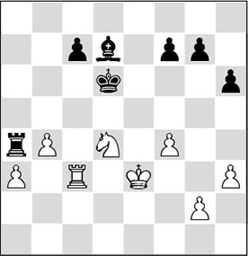
The first stage is completed. The pieces are now where Capablanca wanted them to be. The next scheme is as follows: white king to d4, knight to e2 and rook to e3.
43.♘e2 g6?!
There was no reason for this weakening, but apparently Black deemed this move necessary.
44.♖d3+ ♔e6 45.♔d4 ♖a6 46.♖e3+ ♔d6
Perhaps, 46…♔f6 was an idea, although White could then still continue with 47.♘c3.
47.♘c3
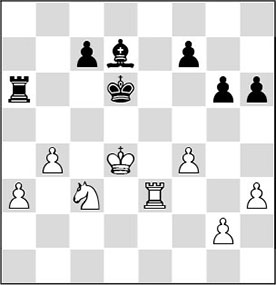
The second stage is also completed, and, what is more, White has achieved another small success by playing his knight to the useful square c3, making use of the motif of a petit combinaison: 47…♖xa3? fails to 48.♘e4+, winning the rook.
47…f5?!
Again, a deterioration of the black position.
In these new circumstances Capablanca formulated the third stage of his scheme as follows: pawn to b5, after which he can play his king to b4 and follow up with a3-a4. As soon as the a4-pawn is protected for a second time, White can deploy his knight elsewhere.
48.b5 ♖a8
48…♖xa3 49.♘e4+ fxe4 50.♖xa3 ♗xb5 51.♖g3 c5+ 52.♔xe4 ♗c6+ 53.♔d3 ♗e8+– (Capablanca).
49.♔c4 ♗e6+ 50.♔b4
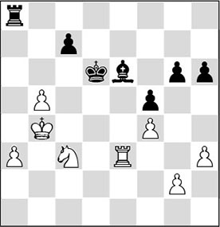
The third stage is completed. White is now ready to make his extra pawn operative (a3-a4-a5-a6).
50…c5+
Black decides not to sit and watch idly, and again changes the structure of the position.
51.bxc6 ♗g8
Now the next stage must be entered. White plays his knight to b5 so as not to be harassed by checks by the black rook, and then his own rook will enter the sixth rank via the d-file, to conquer the black pawns on the kingside.
52.♘b5+ ♔xc6 53.♖d3 g5 54.♖d6+ ♔b7 55.fxg5
Also tempting was 55.♖xh6, but after 55…gxf4, with the idea of 56.♖f6 ♗d5, the material would be seriously reduced, diminishing White’s winning chances.
55…hxg5 56.♖g6 ♖f8 57.♖xg5 f4
Now White is two pawns up, and he prepares to enter the final stage. First he must prevent …f4-f3, and next he should improve the position of his rook somewhat, by playing it to the sixth or seventh rank. Then he can start pushing his passed h-pawn.
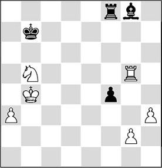
58.♘d4
Capablanca himself indicates that 58.a4! would have been stronger still.
58…♖c8 59.♖g7+ ♔b6 60.♖g6+ ♔b7 61.♘b5
White has to move his knight due to the threat of 61…♖c4+.
61…♖f8 62.♘d6+ ♔b8 63.h4
1-0
We have introduced the subject of ‘schematic thinking’. We have to bear in mind that this way of thinking is only viable if the opponent cannot develop any activity and is forced to take up a wait-and-see attitude.
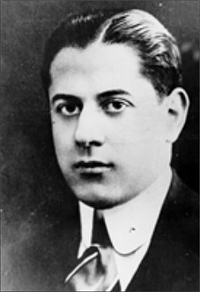
José Raul Capablanca
In view of this, it is very important to apply the ‘don’t hurry’ principle. Or, to put it differently: the side that stands better should often try to convert his advantage step by step, and not take any premature actions. By the way, this schematic way of thinking is applicable to many other aspects of the game as well. In countless endgames, you should think in schemes rather than variations. But also in middlegame situations it is conceivable that devising a plan may be closely linked to this thinking pattern.
A strong player first wants to know where his pieces should go, and only then will he look at concrete variations.
This methodical way of playing is quite beautifully illustrated in the following fragment.
GAME 6
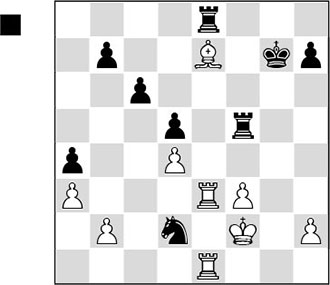
In the diagram position, Black is clearly better on account of his superior pawn structure. White has various pawn groups, whereas Black has a beautifully connected formation on the queenside. With his next move Black liquidates to a rook ending that offers him good winning chances.
30…♘e4+! 31.♔g2 ♖xe7 32.fxe4 ♖xe4 33.♖xe4 dxe4 34.♖xe4 ♖b5 35.♖e2 ♖b3
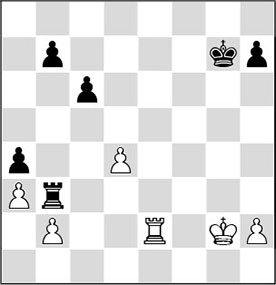
This was the position Black had in mind when he exchanged his knight for the bishop.
In this rook endgame Black disposes of various positional advantages. Firstly, White has three weak pawns: on b2, d4 and h2, whereas Black’s pawns are all well protected. Secondly, Black’s rook is ideally placed. It attacks b2, protects b7 and, from b3, cuts off the white king from the third rank. Thirdly, Black has a more active king, which will arrive on the d5-square sooner or later and will then be able to enter the queenside decisively. Since White has no counterplay, these factors guarantee Black a decisive advantage.
36.♔f2 ♔f6 37.♔e1 h6!
A waiting move that puts White into zugzwang. Now he must allow the black king to enter the queenside, since a move with his king would cost him the d-pawn after 38…♖d3. For instance: 38.♔d1 ♖d3+, and now White loses the pawn ending after 39.♖d2 ♖xd2+ 40.♔xd2 ♔e6 41.♔c3 ♔d5 42.♔d3 h5 43.h4 b5, etc.
38.♖g2 ♔e6!
Black does not get confused by the line 39.♖g6+? ♔d5 40.♖xh6 ♖xb2, after which there would be no more technical problems for him.
39.♔d1 ♔d5 40.♔c2
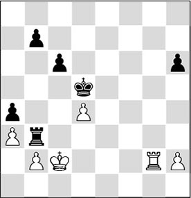
40…♖h3!
Just as in the Capablanca example, here also the ‘don’t hurry’ principle applies. After 40…♔xd4? 41.♖g4+ ♔c5 42.♖h4, White would save the draw. After the text move White is still left with two weaknesses: the pawns on d4 and h2.
41.♖d2 ♔c4 42.♔b1
Now that all of Black’s pieces are ideally placed, it is time for a new scheme. The white rook is tied to the d2-square, where it is forced to grimly keep protecting the weaknesses on d4 and h2. This gives Black the opportunity to push his h-pawn to h3, and then to play his rook via f3, f1 and g1 to the newly-created foothold on g2.
Incidentally, there were several good alternatives, such as 42…♖h4.
42…h5
42…♔b3 would endanger the win due to 43.♖c2! (not 43.d5? ♖f3 44.♖c2 ♖f1+ 45.♖c1 ♖xc1+ 46.♔xc1 cxd5–+), when things are not so clear: 43…♖d3 44.♖c1, and Black cannot take the pawn in view of mate, and therefore it is hard to see how he can make further progress.
43.♔a2
If White remains passive, he will succumb to the above-mentioned plan. In his home analysis, Smyslov has found the most tenacious defence. His idea is to tuck the king away on a2, so that the black king cannot enter on b3 and the black rook can never reach the second rank with check. White has reconciled himself with the loss of the d-pawn.
43…♖h4 44.♖f2 ♔xd4 45.♖f7 b5 46.♖f2 ♖h3 47.♖d2+ ♖d3
Somewhat more simple was 47…♔c5, followed by 48…♔b6, as happens later on in the game.
48.♖f2 ♔c4 49.♖c2+ ♔d5 50.♖g2
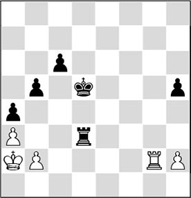
Here the importance of schematic thinking becomes clear. The last few moves by Keres have been a little aimless. Only now does he discover that a new plan is needed in order to make progress. The black rook belongs on h3, tying the white rook to the second rank and protecting its own h-pawn. In order to escape from the checks the black king must go to b6, from where it is able to take shelter on a5. After that Black must push his c-pawn forward in order to later break open the second rank.
50…♖h3 51.♖d2+ ♔c5 52.♖c2+ ♔b6 53.♖f2 c5 54.♖f6+ ♔a5 55.♖f2 c4 56.♖g2
Black has neatly executed the aforementioned plan and now he prepares to enter a new stage. With …c4-c3 he will again force an opening of the second rank, after which he can once more take up the above-mentioned plan (…h5-h4, …♖h3-f3, …h4-h3, …♖f3-f1-g1-g2).
The opening of the second rank is essential in this plan, since after that White cannot undertake any activity with his rook, as in that case he will lose the pawn on h2.
56…c3 57.b4+
Instead, after 57.bxc3 ♖xc3, the above-mentioned plan could no longer be prevented.
57…axb3+ 58.♔xb3
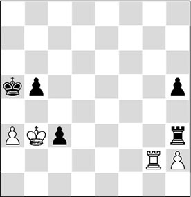
58…c2+
Black executes the plan in a slightly different version. With this check the white king is forced back to the first or the second rank again, after which the scheme that we have outlined can be executed.
59.♔xc2 ♖xa3 60.♔b2 ♖f3 61.♖e2 h4 62.♖d2 h3
Slightly more accurate was 62…♖h3! 63.♖f2 ♔a4! 64.♖d2 b4, after which the black king has improved its position somewhat. After that, Black can resume the thread.
63.♖e2
The win would have taken up a little more time after 63.♖d4!, since after 63…♖f2+ 64.♔b3 ♖xh2 65.♖h4 Black has to bring his king all the way up to the h-pawn in order to win. Now the rest is no longer difficult.
63…♔a4 64.♔b1 ♖f1+ 65.♔c2 b4 66.♔d3 ♖d1+ 67.♔c2 ♖g1
White resigned. After 68.♖e3, 68…♖g2+ 69.♔b1 ♖xh2 70.♖f3 b3 71.♖f8 ♖g2, followed by …h2, leads to the win.
4.3 Relativity
Sometimes chess can be very unfair. Haven’t we seen too many positions where the side that has extra material cannot force the win, since the position is a theoretical draw? What chess player doesn’t know the case where a lone king is up against two knights that, however, cannot force the win without cooperation by the opposite side?
Relativity example 01
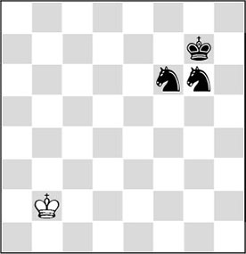
Equally unfair is the following case, where there is no win for the stronger side either.
Relativity example 02a
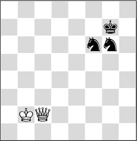
Together the knights control a series of important squares, making it impossible for the enemy king to approach. Here also, the result of the game is a draw. These two cases once prompted grandmaster Jan Hein Donner to make the following joke: ‘Nowadays, a queen is worth nothing’, he said. ‘Put two knights on the opposite side; it doesn’t matter if you leave the queen on the board or take it off, the result will be the same: a draw. In short: a queen is worth nothing!’
By the way, you’d better be careful with those knights. In many cases the queen does win, as can be seen in the following fragment:
Relativity example 02b
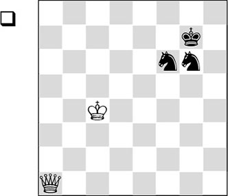
This is an exception to the fortress idea that we gave in the preceding diagram. There is one extraordinary way in which White can manage to break through the black fortress. The idea is to separate the knights from each other. Botvinnik has taught us that two knights protecting each other only appear to be strong, but actually carry the seed of defeat. In the middlegame also, two knights protecting each other can be the cause of great trouble.
After the knights have been separated, the king and queen work together harmoniously to drive the black king from its ‘safe’ position. The ingenious winning method can be found with the help of Ken Thompson’s endgame CD or the Nalimov EGTB, as follows:
1.♔c5 ♔f7 2.♕a2+ ♔e7
The black king leaves its ‘safe haven’. 2…♔g7 is the most natural move, but unfortunately it loses even more quickly than the strange move in the main line. I give the winning line on authority of the ‘tablebases’, with the optimal moves on both sides: 3.♕a7+ ♔h6 4.♔d6 ♘g4 5.♕a5 ♘h4 6.♔d5 ♘f6+ 7.♔e5 ♘h7 8.♕c7 ♘g6+ 9.♔f5 ♘h4+ 10.♔g4 ♘g6 11.♕b6 ♘f8 12.♔f5 ♔g7 13.♕a7+ ♔h6 14.♕d4 ♔h5 15.♔f6 ♘h7+ 16.♔g7 ♘hf8 17.♕g1 ♘e6+ 18.♔f6 ♘gf4 19.♕g3 ♔h6 20.♕h4+, and White wins material.
3.♔d4 ♘f8 4.♔e5 ♘6d7+
The knights have been forced to give up their harmonious formation, allowing White to break up the defence with a few complicated manoeuvres.
5.♔e4 ♘e6 6.♕a3+ ♔f7 7.♕d6 ♘df8 8.♕d5 ♔f6 9.♕c6 ♔e7 10.♕b7+ ♔d6 11.♕b6+ ♔e7 12.♕b4+ ♔f6 13.♕c3+ ♔e7 14.♔f5
Slowly but surely, Black’s possibilities are reduced.
14…♘d8 15.♕e1+ ♘fe6 16.♕e3 ♔d7 17.♔f6 ♘c7 18.♕d2+ ♔c8 19.♔e7 ♘c6+ 20.♔d6 ♘d4
Of course, the defender should always exploit knight forks! 21.♕xd4?? ♘b5+.
21.♕a5 ♘cb5+ 22.♔d5 ♔d7 23.♕b6 ♔e7 24.♕g6
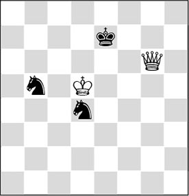
24…♘e2 25.♕e6+
And White wins material.
By the way, once those two knights were the subject of a nice joke. In the following position, where Black cannot make any progress, Najdorf decided to end the game in a humoristic manner.
GAME 7
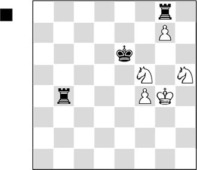
Here the Argentinian sacrificed both his rooks for both white pawns, in order to reach the notorious two knights ending:
1…♖xf4+ 2.♔xf4 ♖xg7 3.♘hxg7+
Still relishing his own witticism, Najdorf was flabbergasted when his opponent played on. The Argentinian asked why his opponent continued in this ‘theoretically drawn position’. ‘But don’t you know that someone in Tbilisi has finally found how this extremely difficult endgame can be won?’, the Russian replied with a deadpan expression. When the blood had drained from Najdorf’s face, Kotov laughed and offered a draw in his turn. This episode is described in Tim Krabbé’s book New Chess Curiosities.
It is useful to dwell a little longer on a few theoretical cases where a (large) material advantage is insufficient for the win.
Relativity example 03
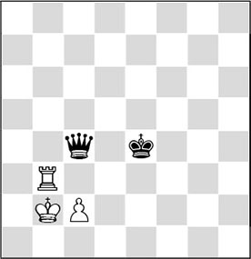
Relativity example 04
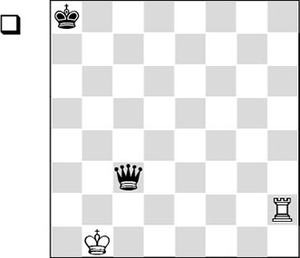
Normally speaking, queen wins against rook, although the American grandmaster Walter Browne once did not manage this within the maximum 50 moves, playing against a computer program. Thanks to a ‘coincidence’, in the diagram position, White can force a draw, starting with 1.♖a2+. The white rook then keeps pursuing the black king from a2 and b2, since it is impossible to escape via the c-file under penalty of losing his queen after ♖c2. The fact that the black queen is unfortunately positioned allows White to escape by the skin of his teeth.
1.♖a2+ ♔b7 2.♖b2+ ♔a6 3.♖a2+ ♔b5 4.♖b2+ ♔a4 5.♖a2+ ♔b3 6.♖a3!+
½-½
Relativity example 05
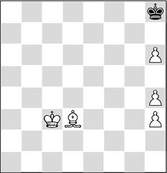
Now for a practical example.
GAME 8
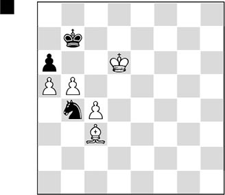
Black faces the tough task of combating a bishop and three connected pawns with a knight and one pawn. His only chance of salvation lies in the fact that White possesses the bishop of the wrong colour.
76…axb5
After 77.♗xb4 bxc4, White would have to settle for a draw.
77.cxb5 ♘a6!
Thus Black exploits the circumstance that White has the bishop of the wrong colour. Furthermore, he now threatens to lure the pawn to b6 with …♘c7.
78.b6
Sooner or later this push would have been inevitable.
78…♘b8
The knight would like to reach the squares c8 and a7.
79.♗d4 ♘a6 80.♗e3 ♘b8 81.♔c5?!
The first hesitation, indicating that the white player, in the time-scramble at the end of the game, doesn’t see how he can carry off the palm. As we will soon see, there is still a win for White.
81…♘a6+ 82.♔b5
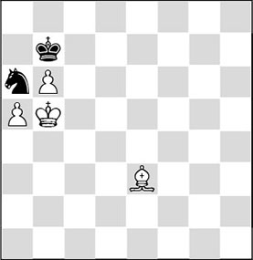
82…♘c7+!
White had not foreseen this remarkable little check, and now he lost the thread.
83.♔c4?!
It was not yet too late to retrace his footsteps. White could still have gained the full point in an instructive manner: 83.♔c5 ♘a6+ 84.♔d6 ♘b8 85.♗f2! (a tempo move, to keep the b6-pawn protected a little longer. This also prevents 85…♘c6 on account of 86.a6+!) 85…♘a6 86.♗g3! (now the moment has come to change diagonals) 86…♘b4 (playing the knight to and fro between b8 and a6 is now rendered impossible in view of 86…♘b8 87.♔c5 ♘a6+ 88.♔b5, and now after 88…♔a8 White wins with 89.♗f4 ♔b7
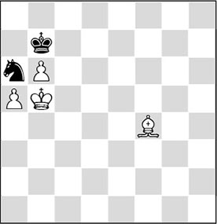
Analysis diagram
90.♗d6! ♔a8 91.♔c6, and Black runs out of moves) 87.♔c5 ♘c2 88.♗f2, and the knight is sidetracked.
83…♔c6!
In this way, Black conquers new territory, and the danger of losing has passed.
84.♗f4
84.♗f2 was a better chance, but after 84…♘a6 85.♗g3 ♘c5 86.♗e5 ♘a6 87.♗d4 ♘c7 White cannot make progress.
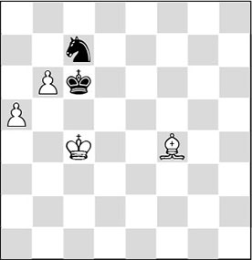
84…♘d5!
Now, after a bishop move on the b8-h2 diagonal, Black takes on b6.
85.b7 ♔xb7 86.♔xd5 ♔a8
A Herculean drawing effort!
Relativity example 06
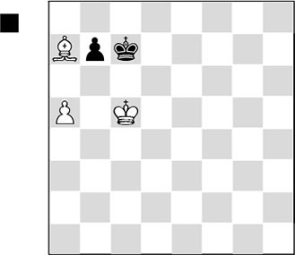
The problems in this position seem to be related to those of the previous position. Again there is a wrong-coloured bishop, but here the black king has not reached the corner yet. However, Black has an elegant construction at his disposal, which allows him to emerge with a half point from this precarious situation after all:
1…b6+!
Clearing the passage to the corner for his king. We have already seen that 2.♗xb6+ ♔b7, followed by 3…♔a8, is a draw. But it is not so easy to see that after
2.axb6+ ♔b7
White has nothing left to play for either. The unfortunate bishop is boxed in, and the white king cannot come closer because of the stalemate trap 3.♔d6 ♔a8 4.♔c6. Finally, the bishop sacrifice 3.♗b8 ♔xb8 4.♔c6 ♔c8 does not win either. An amazing story!
It’s crystal-clear that in most cases a rook is stronger than a bishop. We know that the rook almost never beats a bishop when there are no other pieces or pawns on the board, but with one pawn added, the win should not be a problem. The following position is an exception.
Relativity example 07
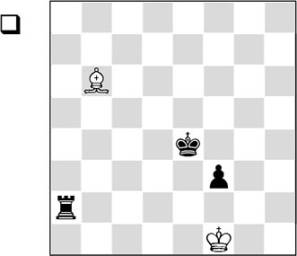
The bishop has firm control of the a7-g1 diagonal, not allowing the black king to get to the e3-square, and if the latter goes to g3 it will be harassed by a check ‘in the back’. It is essential that after
1.♗c5 f2
White defends with
2.♔g2!
After 2.♗xf2? ♔f3 3.♗e1 ♖a1 White would have to cash in his chips after all, but after the text move the black pawn is marked for death. He can try
2…f1♕+
but with correct play this will not bring him success. For example:
3.♔xf1 ♔f3 4.♔g1 ♔g3 5.♗d6+
with a draw.
Relativity example 08

In this diagram position, the material deficit is also considerable, but the white king is in the way of its pawn. So Black must keep it imprisoned in the corner. But which square should he choose? Indeed – the square of the same colour that the white knight is on: f7!
1…♔f7!
Now it’s a draw, since a knight cannot ‘triangulate’, i.e., it cannot lose a tempo to give the move to the opponent.
After the alternative 1…♔f8 Black would lose, for instance: 2.♘e3 ♔f7 3.♘g4 ♔f8 4.♘e5 and the black king is driven away from the corner.
2.♘d4 ♔f8 3.♘e6+ ♔f7 4.♘g5+ ♔f8
White cannot make progress. Here we can see the difference between human thinking and calculation by strong computer programs. Fritz 11 gives +– (6.10) in this position, and Rybka 2.4 32-bit awards +– (5.12) (Rybka 2.1 gives 3.62). Stockfish 7 (64 bit) gives 5.77.
Relativity example 09
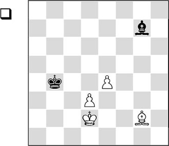
Two pawns down, but opposite-coloured bishops on the board. This factor has the habit of saving the defending side again and again. Here the white pawns are unfortunately placed. White cannot break the blockade on the dark squares. It is essential that the white d-pawn does not cross the d4-square.
1.♔e3 ♔c5
Maintaining the blockade on the dark squares. Even a white king march to f5 will not help. The black king follows suit, ending up on the d6-square and keeping the dark squares under control.
2.♔f4 ♔d6
½-½
Relativity example 10
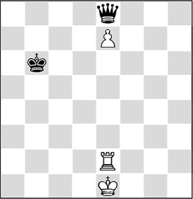
This position illustrates once more that a rook belongs behind its passed pawn. This makes the pawn so strong that Black cannot use either his queen or his king. And only when these two pieces cooperate will Black have any chances to win this endgame.
In the diagram position the black king can walk to e8, after which the queen is free to move. But if the queen leaves her post, the king is tied hand and foot to the promotion square. Without help of the king, Black has no winning chances.
And White does not even have to allow this. He can leave his king on e1 so that the queen has no check, and play his rook to and fro on e2 and e3. Then if the queen leaves e8, he plays e7-e8♕(+).
Therefore: a draw.
In the following exercises you can dabble further with ‘schematic thinking’.
Exercises

How can White convert his material plus? Try to express in words what the correct plan is for White.
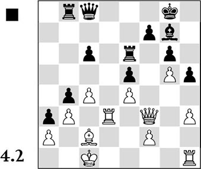
Who do you think is better here? Indicate on which features you have based your verdict and formulate a plan that is related to those features.
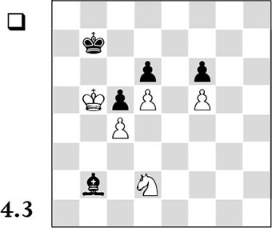
With this position you can practice schematic thinking. White possesses a good knight versus a bad bishop. Three pawns have been fixed on the colour of the bishop, and this is enough for White to win. Work out step by step what White must do in order to force the win.
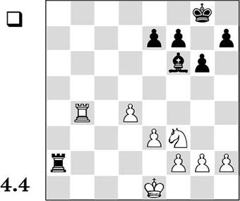
White has an extra pawn, but all the pawns are on one wing. White does possess the advantage of knight above bishop, since the fact that the pawns are only on one wing helps the knight; the bishop is, as it were, snapping at thin air. How can White try to convert these features into more concrete advantages? Formulate a plan and determine which move you would play in this position.